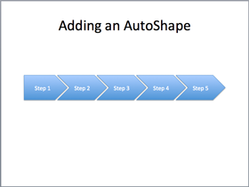

快速上手¶
快速入门的方法是尝试下面的一些例子，以获得如何使用 python-pptx 的感觉。
API 文档 可以帮助您调用签名和行为的详细信息。
你好世界！例子¶

from pptx import Presentation
prs = Presentation()
title_slide_layout = prs.slide_layouts[0]
slide = prs.slides.add_slide(title_slide_layout)
title = slide.shapes.title
subtitle = slide.placeholders[1]
title.text = "Hello, World!"
subtitle.text = "python-pptx was here!"
prs.save('test.pptx')
子弹幻灯片的例子¶
from pptx import Presentation
prs = Presentation()
bullet_slide_layout = prs.slide_layouts[1]
slide = prs.slides.add_slide(bullet_slide_layout)
shapes = slide.shapes
title_shape = shapes.title
body_shape = shapes.placeholders[1]
title_shape.text = 'Adding a Bullet Slide'
tf = body_shape.text_frame
tf.text = 'Find the bullet slide layout'
p = tf.add_paragraph()
p.text = 'Use _TextFrame.text for first bullet'
p.level = 1
p = tf.add_paragraph()
p.text = 'Use _TextFrame.add_paragraph() for subsequent bullets'
p.level = 2
prs.save('test.pptx')
并不是所有的形状都可以包含文本，但那些包含文本的形状总是至少有一个段落，即使该段落为空，且在形状中没有文本可见。_BaseShape.has_text_frame 可用于确定形状是否可以包含文本。（所有形状的子类 _BaseShape）当 _BaseShape.has_text_frame 是 True， _BaseShape.text_frame.paragraphs[0] 返回第一段。第一段的文本可以使用 text_frame.paragraphs[0].text 设置。作为快捷方式，可写属性 _BaseShape.text 和 _TextFrame.text 来完成同样的事情。请注意，这最后两个调用删除了除了第一个段落之外的所有段落，然后再设置它所包含的文本。
add_textbox() example¶
from pptx import Presentation
from pptx.util import Inches, Pt
prs = Presentation()
blank_slide_layout = prs.slide_layouts[6]
slide = prs.slides.add_slide(blank_slide_layout)
left = top = width = height = Inches(1)
txBox = slide.shapes.add_textbox(left, top, width, height)
tf = txBox.text_frame
tf.text = "This is text inside a textbox"
p = tf.add_paragraph()
p.text = "This is a second paragraph that's bold"
p.font.bold = True
p = tf.add_paragraph()
p.text = "This is a third paragraph that's big"
p.font.size = Pt(40)
prs.save('test.pptx')
add_picture() example¶
from pptx import Presentation
from pptx.util import Inches
img_path = 'monty-truth.png'
prs = Presentation()
blank_slide_layout = prs.slide_layouts[6]
slide = prs.slides.add_slide(blank_slide_layout)
left = top = Inches(1)
pic = slide.shapes.add_picture(img_path, left, top)
left = Inches(5)
height = Inches(5.5)
pic = slide.shapes.add_picture(img_path, left, top, height=height)
prs.save('test.pptx')
add_shape() example¶

from pptx import Presentation
from pptx.enum.shapes import MSO_SHAPE
from pptx.util import Inches
prs = Presentation()
title_only_slide_layout = prs.slide_layouts[5]
slide = prs.slides.add_slide(title_only_slide_layout)
shapes = slide.shapes
shapes.title.text = 'Adding an AutoShape'
left = Inches(0.93) # 0.93" centers this overall set of shapes
top = Inches(3.0)
width = Inches(1.75)
height = Inches(1.0)
shape = shapes.add_shape(MSO_SHAPE.PENTAGON, left, top, width, height)
shape.text = 'Step 1'
left = left + width - Inches(0.4)
width = Inches(2.0) # chevrons need more width for visual balance
for n in range(2, 6):
shape = shapes.add_shape(MSO_SHAPE.CHEVRON, left, top, width, height)
shape.text = 'Step %d' % n
left = left + width - Inches(0.4)
prs.save('test.pptx')
常量表示每个可用的自动形状（如 MSO_SHAPE.ROUNDED_RECT，MSO_SHAPE.CHEVRON 等）在 autoshape-types 页面上列出。
add_table() example¶
from pptx import Presentation
from pptx.util import Inches
prs = Presentation()
title_only_slide_layout = prs.slide_layouts[5]
slide = prs.slides.add_slide(title_only_slide_layout)
shapes = slide.shapes
shapes.title.text = 'Adding a Table'
rows = cols = 2
left = top = Inches(2.0)
width = Inches(6.0)
height = Inches(0.8)
table = shapes.add_table(rows, cols, left, top, width, height).table
# set column widths
table.columns[0].width = Inches(2.0)
table.columns[1].width = Inches(4.0)
# write column headings
table.cell(0, 0).text = 'Foo'
table.cell(0, 1).text = 'Bar'
# write body cells
table.cell(1, 0).text = 'Baz'
table.cell(1, 1).text = 'Qux'
prs.save('test.pptx')
从幻灯片中提取所有文本¶
from pptx import Presentation
prs = Presentation(path_to_presentation)
# text_runs will be populated with a list of strings,
# one for each text run in presentation
text_runs = []
for slide in prs.slides:
for shape in slide.shapes:
if not shape.has_text_frame:
continue
for paragraph in shape.text_frame.paragraphs:
for run in paragraph.runs:
text_runs.append(run.text)